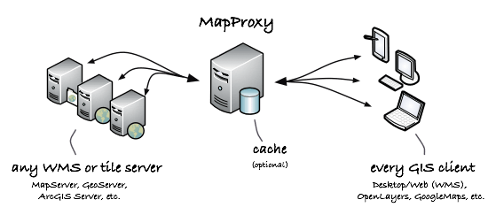

Inicio Rápido de MapProxy¶
MapProxy es la navaja suiza para todos los servicios WMS y servicios de mosaico. Almacena en memoria caché, acelera y transforma los datos de los servicios de mapa y sirve a cualquier cliente GIS de escritorio o web.
MapProxy no es sólo una solución de caché de mosaico, también ofrece muchas características nuevas e innovadoras como soporte completo para clientes WMS.
Contents
Inicie el servicio y vea la demostración¶
MapProxy tiene opciones de implementación flexibles y usted puede integrarlo en Apache, por ejemplo. Pero también puede iniciar MapProxy como un servicio independiente, que es la mejor opción para comenzar.
- Para empezar MapProxy como un servicio independiente, haga click en .
- Inicie Firefox y navegue hacia http://localhost:8011/demo
La página de demostración de MapProxy contiene un cliente WMS y de mosaico rudimentario para cada capa configurada. No puede seleccionar la proyección para capas WMS, por ejemplo, pero es suficiente para verificar rápidamente que su instalación funciona.
Ver en SIG de escritorio¶
Puede Agregar MapProxy en cualquier SIG de escritorio WMS como uDig, QGIS o gvSIG. La dirección URL del servicio es: http://localhost:8011/service?
La configuración de ejemplo MapProxy contiene algunas capas que usan motores de mapa y datos de mapa. Ver abajo para más detalles sobre cada capa.
{kind=link}
Una sola capa WMS con datos de dos fuentes en cascada y FeatureInformation de una sola fuente.
Capas disponibles¶
- mapnik:
- La población mundial representada por Mapnik. No es necesario iniciar el servicio Mapnik, ya que esta capa hace uso del soporte Mapnik integrado en MapProxy.
- tilestache:
- TileStache es un servidor que ofrece teselas del servicio de población mundial Mapnik. Esta capa muestra la capacidad de incluir servicios de teselas existentes en MapProxy y de hacerlos disponibles como WMS. Debe iniciar TileStache con Start Mapnik & TileStache antes de acceder a esta capa.
- geoserver:
- La población estadounidense representada por el WMS de GeoServer. Esta capa también admite las solicitudes
GetFeatureInfoque se colocan en cascada en el WMS de origen. Es necesario iniciar GeoServer con osgeolive-appmenupath-geoserver| antes de acceder a esta capa. - mapnik_geoserver:
- Esta capa demuestra la capacidad de combinar varias fuentes en una capa. Combina la población mundial desde Mapnik con la población estadounidense desde GeoServer. El soporte
GetFeatureInfopara la población de EE. UU. todavía está disponible. Es necesario iniciar GeoServercon antes de acceder a esta capa. - mapserver:
- Esta capa utiliza el dataset de demostración de Mapserver Itasca . Es un conjunto de datos local y utiliza la característica coverage para limitar el BBOX a Itasca, IL.
Crear su propia configuración¶
Puede utilizar``mapproxy-util`` para crear nuevas plantillas de configuración e iniciar un servidor de prueba.
Para crear una nueva configuración:
mapproxy-util create -t base-config ~/mapproxy
Para iniciar el servidor de prueba en el puerto 8011 con la configuración creada:
mapproxy-util serve-develop ~/mapproxy/mapproxy.yaml -b 0.0.0.0:8011
Ahora puede visitar la página de demostración en http://127.0.0.1:8011/demo/. MapProxy se volverá a cargar automáticamente si cambia el archivo de configuración.
¿Qué sigue?¶
- Leer la documentación de MapProxy
- Leer el ejemplo de configuración (
/usr/local/share/mapproxy/mapproxy.yaml)